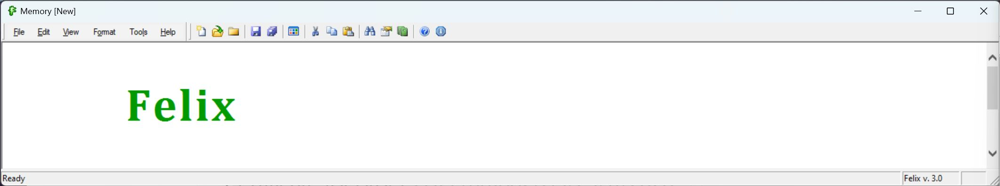
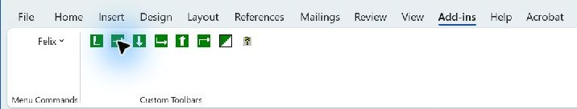
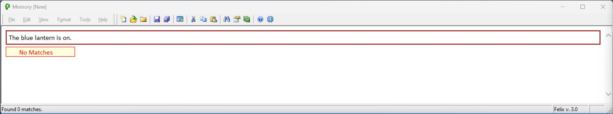
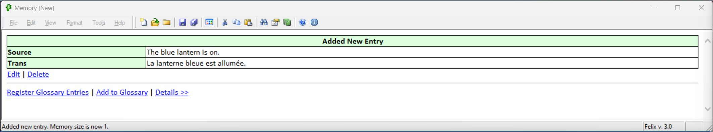
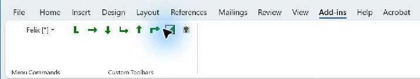
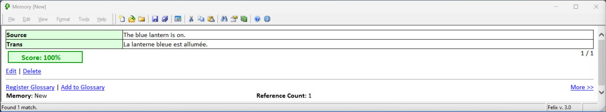

3. Using Felix for the First Time¶
If you are using Felix for the first time, it may be helpful to start with the Quick-start Tutorial Using MS Word or Quick-start Tutorial Using MS PowerPoint.
3.1. Start Felix¶
Open the Windows Start menu, search for Felix, and open the app. Felix opens the Memory and MAIN Glossary windows.
3.2. Arrange the Windows¶
Save a working copy of your Office document before translating. You will replace source text with translations in that copy.
Keep your Office document, the Felix Memory window and MAIN Glossary visible. The Memory window shows matches for whole segments. The glossary shows matching entries inside the segment.


The Felix Memory window

The MAIN Glossary window after a lookup
Try arranging the Office app and Felix side by side. If you use two monitors, you can put the Felix windows on one monitor and the document on the other. See Getting around in Felix for window controls.
3.3. Translate a Document¶
- In Word, open the working copy and place the cursor at the start of the first sentence.
- Open the ribbon’s Add-ins tab and click the right arrow (Look up Next). Word selects the source text and Felix looks up that sentence.

The Felix toolbar on Word’s Add-ins tab
With a new memory, Felix shows No Matches.


The first lookup in an empty memory
- In Word, type the translation over the selected source text.
- Leave the cursor at the end of the translation and click the up arrow (Set As Translation). Felix confirms Added New Entry.


The registered translation
- Click Look up Next to continue. When the same source text appears again, Felix shows Score: 100%. Click the down arrow (Get Translation) to insert the stored translation.
- Save the Word document and save your translation memory in Felix so you can use it again.

An exact match from the translation memory
See Translation Mode for the other Word commands.
3.4. Review a Translation¶
On Word’s Add-ins tab, click the green-and-white triangle button to switch to Review Mode.

The Felix toolbar in Word Review Mode
Put the cursor at the start of the first translated sentence and click the right arrow (Look Up Next Translation). The Memory window shows the translation and its original source.


Felix Memory shows the original source and the translation during review
If you edit the translation, put the cursor at the end of the corrected sentence and use the up arrow to update its memory entry. Use Look Up Next Translation to keep reviewing. See Review Mode for the complete command list.
3.5. Next Steps¶
Congratulations! You’ve just translated your first document in Felix. After the excitement has died down a bit, you might want to take the grand tour of Felix, starting with Getting around in Felix.
If you’re interested in using Felix from Microsoft PowerPoint, check out Using Felix from PowerPoint, together with the Quick-start Tutorial Using MS PowerPoint.
If you want to use Felix from Microsoft Excel, check out Using Felix from Excel.